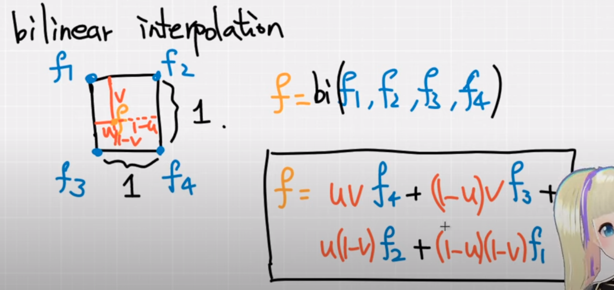

Pytorch + C++ + CUDA

Introduction
- pytorch -> C++ -> CUDA
- pybind: call C++ from python
- CUDA GPU architechture

- CUDA: grid -> block->thread
- 为什么要有block这个中间层?
- block 上限： $(2^{31}-1)*2^{16}*2^{16}$
- Thread上限: 1024
Environment Building
-
conda create -n cppcuda python=3.8 -
conda activate cppcuda -
Install pytorch
-
python -m pip install pip -U pip3 install torch torchvision torchaudio
-
-
pytorch path
-
how to check path
import torch
print(torch.__file__)
- path example:
"/usr/include/python3.8",
"/home/.local/lib/python3.8/site-packages/torch/include/",
"/home/.local/lib/python3.8/site-packages/torch/include/torch/csrc/api/include"
- Python setup Example for CppExtension
from setuptools import setup
from torch.utils.cpp_extension import BuildExtension, CppExtension
setup(
name='cppcuda_tutorial',
version='1.0',
author='qingbao',
author_email='<EMAIL>',
description='cppcuda example',
long_description='A tutorial for using C++ and CUDA in PyTorch',
long_description_content_type='text/markdown',
ext_modules=[
CppExtension(
name='cppcuda_tutorial',
sources=['interplation.cpp']),
],
cmdclass={
'build_ext': BuildExtension},
)
General use case
- non parallel computation, e.g. volume rendering
- lots of sequential computation
Example: linear interpolation
Bilinear interpolation

Trilinear interpolation
-
Input
- feats: (N, 8, F)
- N: 多少个volume
- 8： 8个顶点
- F: 每个顶点的特征
- feats: (N, 8, F)
-
Output
- points: (N, 3) 差值后的点
-
平行运算：
- N个点
- F平行
-
如何计算block大小

const int N = feats.size(0);
const int F = feats.size(2);
// torch::zeros({N, F}, torch::dtype(torch::kInt32).device(feats.device()));
torch::Tensor feat_interp = torch::zeros({N, F}, feats.options());
const dim3 threads(16, 16); // max threads:256, two dimension, each use 16 threads
const blocks((N + threads.x -1)/threads.x, (F + threads.y -1)/threads.y);
Issues
- unsupported clang version
/usr/local/cuda/bin/../targets/x86_64-linux/include/crt/host_config.h:151:2:
[cmake] error: -- unsupported clang version! clang version must be less than 16 and
[cmake] greater than 3.2 . The nvcc flag '-allow-unsupported-compiler' can be used
[cmake] to override this version check; however, using an unsupported host compiler
[cmake] may cause compilation failure or incorrect run time execution. Use at your
[cmake] own risk.
[cmake]
[cmake] 151 | #error -- unsupported clang version! clang version must be less than 16 and greater than 3.2 . The nvcc flag '-allow-unsupported-compiler' can be used to override this version check; however, using an unsupported host compiler may cause compilation failure or incorrect run time execution. Use at your own risk.
[cmake] | ^
[cmake]
[cmake] 1 error generated.
Solution:
Use clang less than 16.
set(CMAKE_C_COMPILER /usr/bin/clang-13)
set(CMAKE_CXX_COMPILER /usr/bin/clang++-13)
- Failed to initialize NumPy
.local/lib/python3.8/site-packages/torch/nn/modules/transformer.py:20: UserWarning: Failed to initialize NumPy: numpy.core.multiarray failed to import (Triggered internally at ../torch/csrc/utils/tensor_numpy.cpp:84.)
device: torch.device = torch.device(torch._C._get_default_device()), # torch.device('cpu'),
Solution:
python -m pip install pip -U
- setuptools
_check_cuda_version(compiler_name, compiler_version)
File "/home/qingbao/.local/lib/python3.8/site-packages/torch/utils/cpp_extension.py", line 411, in _check_cuda_version
raise ValueError("setuptools>=49.4.0 is required")
ValueError: setuptools>=49.4.0 is required
References
Archives
2019/03 (14) 2020/08 (1) 2021/01 (2) 2021/05 (2) 2021/12 (2) 2022/03 (2) 2022/04 (2) 2023/12 (2) 2024/01 (5) 2024/04 (1)Tags
Recent Posts